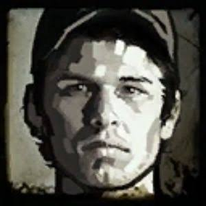

ellis
ellis
Ellis

Ellis es un joven mecánico de automóviles de Savannah, Georgia.
Es un personaje jugable en Left 4 Dead 2 y uno de los cuatro supervivientes
del juego. Ellis es conocido por su personalidad optimista y su sentido del humor
, a menudo contando historias sobre su amigo Keith y sus aventuras en la ciudad.
A pesar de su juventud, Ellis demuestra ser valiente y capaz de enfrentarse a
los peligros del apocalipsis zombie junto a sus compañeros supervivientes.
-Volver a Supervivientes